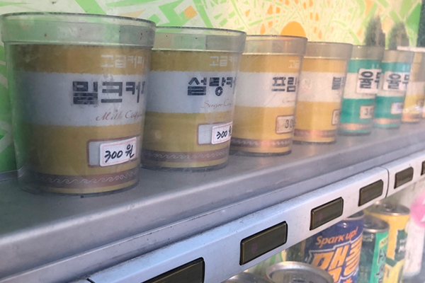

회사소개
회사소개
home > 회사소개 > 연혁
History
연혁
현재-2018
최고의 맛과 신선함으로 세상에 없던 식품을 만들어 종합식품기업으로 도약
-
- 2025
- 03월 농협식품 본사 이전
- 03월 신촌 더피플타워 2층 → 서대문구 NH농협생명빌딩 서관 16층
-
- 2024
- 상반기 쌀로팝 대파크림, 쌀뜨물 국물팩 등 신상품 출시
- 하반기 바삭한 쌀 부침가루/튀김가루, 농협 붕어빵 2종 등 신상품 출시
-
- 2022
- 10월 ESG 경영대상 농림축산식품부장관상 수상(급식사업팀)
- 04월 한국농협김치 판매 개시
-
- 2021
- 11월 부패방지 경영시스템(ISO 37001) 인증 취득
- 04월 2020년 계열사 경영평가 최우수상 수상
-
- 2020
- 04월 2019년 계열사 경영평가 우수상·우수경영자상 수상
- 상반기 임실치즈, 황태스낵, 대봉감말랭이, 과자전병 신상품 출시
2017-2000
글로벌 식품 전문기업으로 끝없는 도전
-

- 2019
- 09월 농협100 상표권 출원
- 06월 홍콩 윌슨그룹과 MOU 체결
-
- 2017
- 07월 농협식품 자회사 출범
- 07월 윤석천 농협식품 초대 대표이사 취임
-

- 2010년대
- 2016 농협식품사업부로 조직 확대
- 2015 공영홈쇼핑 출범에 따라 홈쇼핑사업 조직과 상품공급 확대
-
- 2000년대
- 2008. 01 NH식품분사 출범
- 2000. 07 농협성남센터 소속 변경 > 농협가공제품센터
1990년대
음료부터 유통판매까지 식품 생태계의 관리자로 확장
-

- 1990년대
- 1994. 12 농협식품전문점 체인사업 개시
- 1994. 07 농협음료 자판기사업 실시